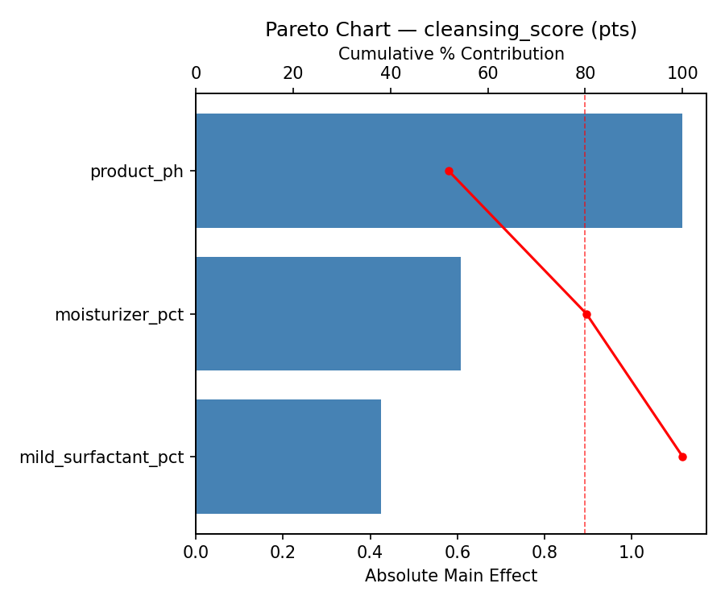
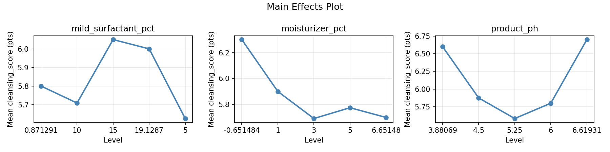
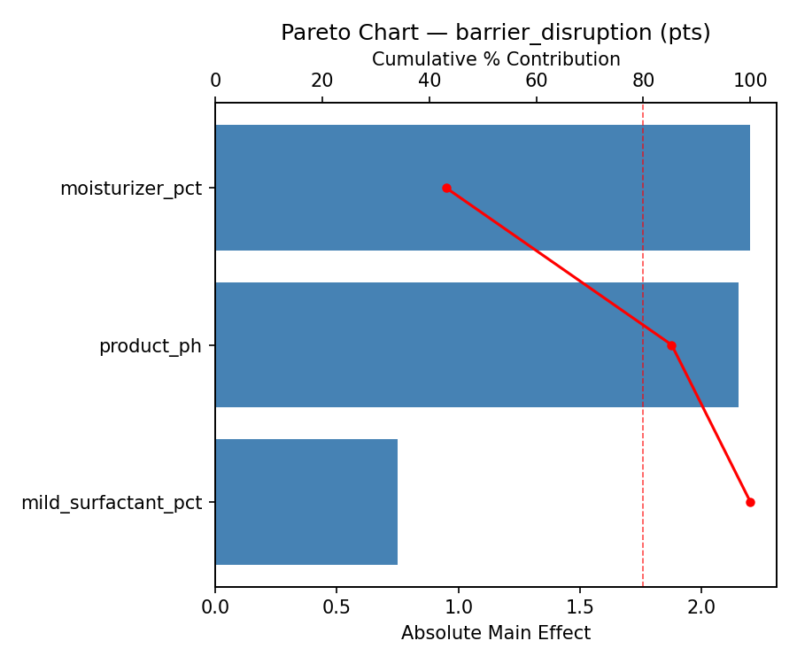
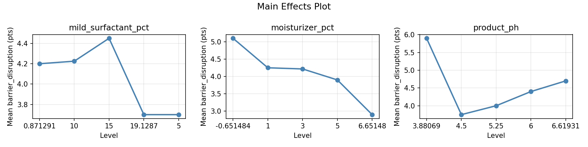
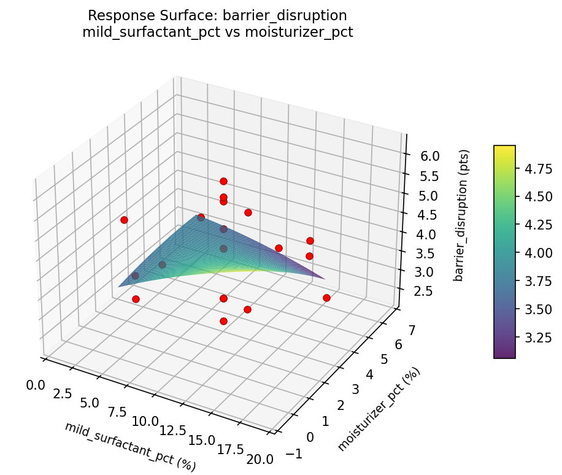
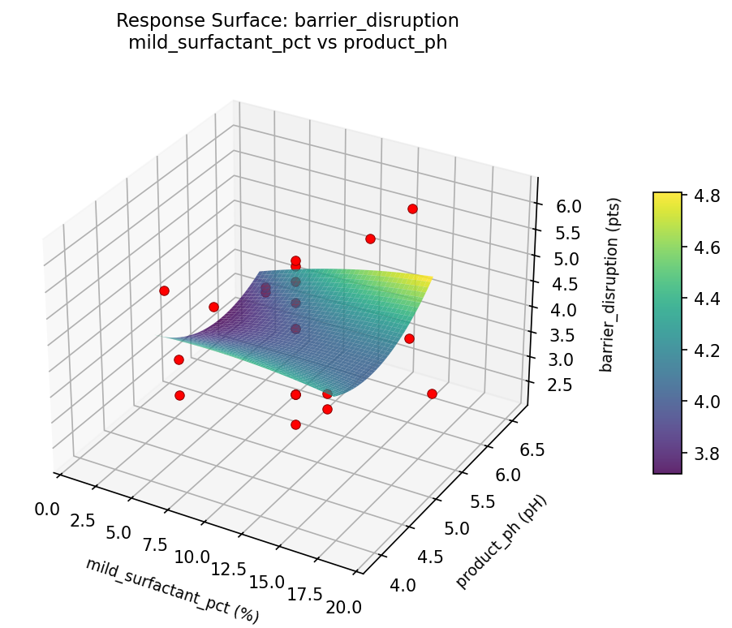
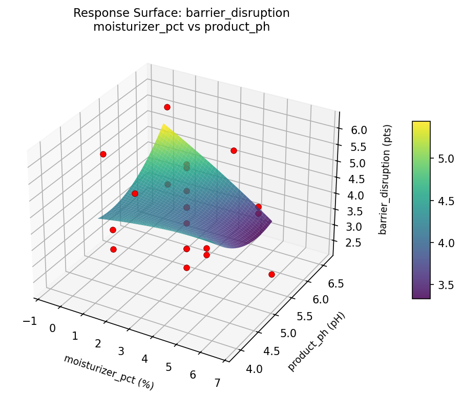
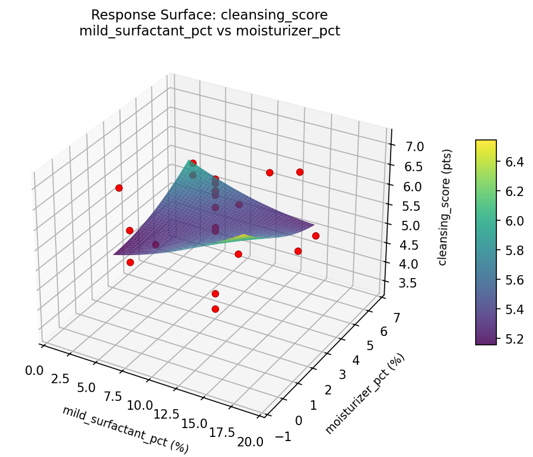
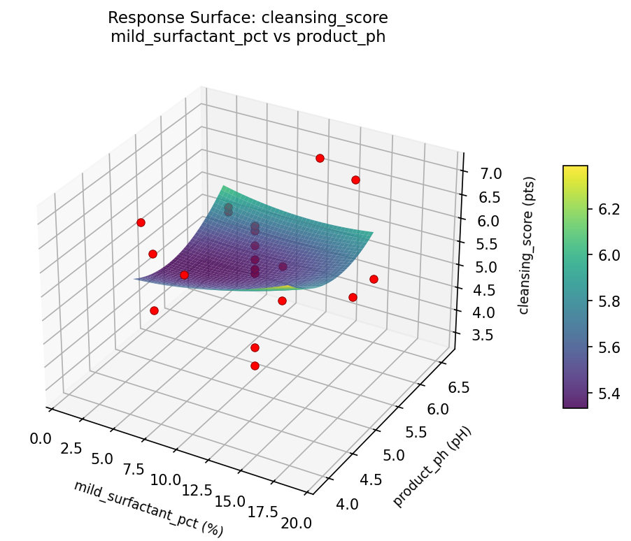
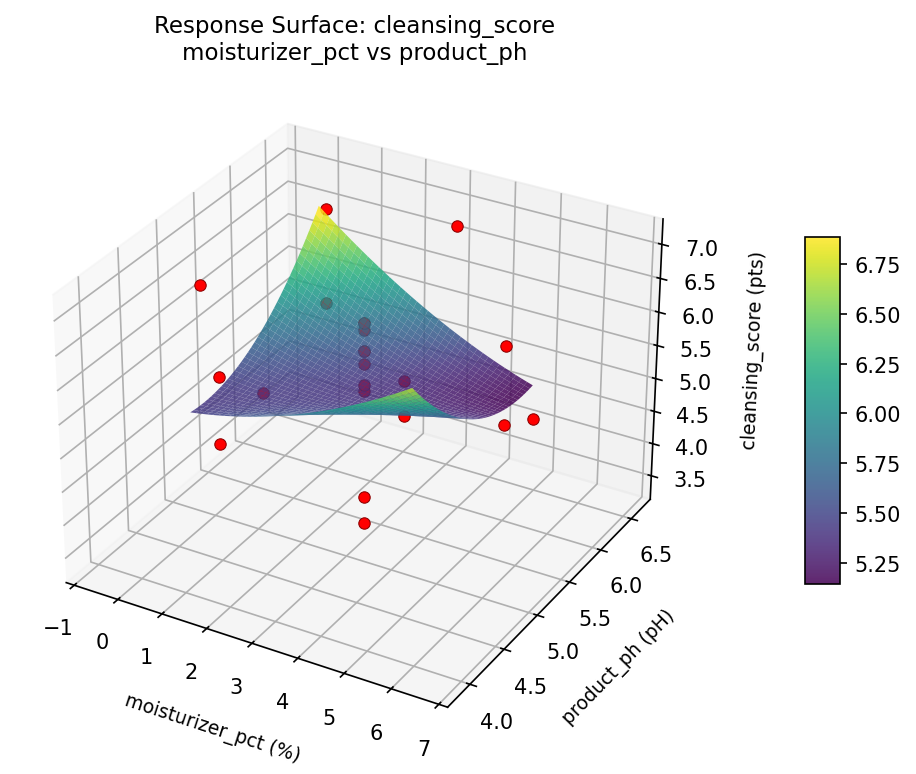

Summary
This experiment investigates body wash mildness optimization. Central composite design to maximize cleansing while minimizing skin barrier disruption by tuning surfactant blend ratio, moisturizer add-back, and pH.
The design varies 3 factors: mild surfactant pct (%), ranging from 5 to 15, moisturizer pct (%), ranging from 1 to 5, and product ph (pH), ranging from 4.5 to 6.0. The goal is to optimize 2 responses: cleansing score (pts) (maximize) and barrier disruption (pts) (minimize). Fixed conditions held constant across all runs include primary surfactant = cocamidopropyl_betaine, fragrance = lavender.
A Central Composite Design (CCD) was selected to fit a full quadratic response surface model, including curvature and interaction effects. With 3 factors this produces 22 runs including center points and axial (star) points that extend beyond the factorial range.
Quadratic response surface models were fitted to capture potential curvature and factor interactions. The RSM contour plots below visualize how pairs of factors jointly affect each response.
Key Findings
For cleansing score, the most influential factors were moisturizer pct (41.5%), mild surfactant pct (34.9%), product ph (23.6%). The best observed value was 7.1 (at mild surfactant pct = 5, moisturizer pct = 1, product ph = 4.5).
For barrier disruption, the most influential factors were moisturizer pct (51.3%), product ph (32.1%), mild surfactant pct (16.5%). The best observed value was 2.3 (at mild surfactant pct = 5, moisturizer pct = 1, product ph = 6).
Recommended Next Steps
- Run confirmation experiments at the predicted optimal settings to validate the model.
- Consider whether any fixed factors should be varied in a future study.
Experimental Setup
Factors
| Factor | Low | High | Unit |
|---|
mild_surfactant_pct | 5 | 15 | % |
moisturizer_pct | 1 | 5 | % |
product_ph | 4.5 | 6.0 | pH |
Fixed: primary_surfactant = cocamidopropyl_betaine, fragrance = lavender
Responses
| Response | Direction | Unit |
|---|
cleansing_score | ↑ maximize | pts |
barrier_disruption | ↓ minimize | pts |
Configuration
{
"metadata": {
"name": "Body Wash Mildness Optimization",
"description": "Central composite design to maximize cleansing while minimizing skin barrier disruption by tuning surfactant blend ratio, moisturizer add-back, and pH"
},
"factors": [
{
"name": "mild_surfactant_pct",
"levels": [
"5",
"15"
],
"type": "continuous",
"unit": "%"
},
{
"name": "moisturizer_pct",
"levels": [
"1",
"5"
],
"type": "continuous",
"unit": "%"
},
{
"name": "product_ph",
"levels": [
"4.5",
"6.0"
],
"type": "continuous",
"unit": "pH"
}
],
"fixed_factors": {
"primary_surfactant": "cocamidopropyl_betaine",
"fragrance": "lavender"
},
"responses": [
{
"name": "cleansing_score",
"optimize": "maximize",
"unit": "pts"
},
{
"name": "barrier_disruption",
"optimize": "minimize",
"unit": "pts"
}
],
"settings": {
"operation": "central_composite",
"test_script": "use_cases/228_body_wash_mildness/sim.sh"
}
}
Experimental Matrix
The Central Composite Design produces 22 runs. Each row is one experiment with specific factor settings.
| Run | mild_surfactant_pct | moisturizer_pct | product_ph |
|---|
| 1 | 10 | 3 | 5.25 |
| 2 | 15 | 1 | 6 |
| 3 | 5 | 5 | 4.5 |
| 4 | 10 | 6.65148 | 5.25 |
| 5 | 10 | 3 | 5.25 |
| 6 | 0.871291 | 3 | 5.25 |
| 7 | 10 | 3 | 3.88069 |
| 8 | 10 | 3 | 5.25 |
| 9 | 15 | 5 | 4.5 |
| 10 | 19.1287 | 3 | 5.25 |
| 11 | 10 | 3 | 5.25 |
| 12 | 10 | -0.651484 | 5.25 |
| 13 | 10 | 3 | 5.25 |
| 14 | 5 | 1 | 6 |
| 15 | 10 | 3 | 5.25 |
| 16 | 15 | 1 | 4.5 |
| 17 | 10 | 3 | 6.61931 |
| 18 | 15 | 5 | 6 |
| 19 | 10 | 3 | 5.25 |
| 20 | 5 | 1 | 4.5 |
| 21 | 5 | 5 | 6 |
| 22 | 10 | 3 | 5.25 |
Step-by-Step Workflow
1
Preview the design
$ python doe.py info --config use_cases/228_body_wash_mildness/config.json
2
Generate the runner script
$ python doe.py generate --config use_cases/228_body_wash_mildness/config.json \
--output use_cases/228_body_wash_mildness/results/run.sh --seed 42
3
Execute the experiments
$ bash use_cases/228_body_wash_mildness/results/run.sh
4
Analyze results
$ python doe.py analyze --config use_cases/228_body_wash_mildness/config.json
5
Get optimization recommendations
$ python doe.py optimize --config use_cases/228_body_wash_mildness/config.json
6
Multi-objective optimization
With 2 competing responses, use --multi to find the best compromise via Derringer–Suich desirability.
$ python doe.py optimize --config use_cases/228_body_wash_mildness/config.json --multi
7
Generate the HTML report
$ python doe.py report --config use_cases/228_body_wash_mildness/config.json \
--output use_cases/228_body_wash_mildness/results/report.html
Features Exercised
| Feature | Value |
|---|
| Design type | central_composite |
| Factor types | continuous (all 3) |
| Arg style | double-dash |
| Responses | 2 (cleansing_score ↑, barrier_disruption ↓) |
| Total runs | 22 |
Analysis Results
Generated from actual experiment runs using the DOE Helper Tool.
Response: cleansing_score
Top factors: moisturizer_pct (41.5%), mild_surfactant_pct (34.9%), product_ph (23.6%).
Pareto Chart

Main Effects Plot

Response: barrier_disruption
Top factors: moisturizer_pct (51.3%), product_ph (32.1%), mild_surfactant_pct (16.5%).
Pareto Chart

Main Effects Plot

Response Surface Plots
3D surfaces fitted with quadratic RSM. Red dots are observed data points.
barrier disruption mild surfactant pct vs moisturizer pct

barrier disruption mild surfactant pct vs product ph

barrier disruption moisturizer pct vs product ph

cleansing score mild surfactant pct vs moisturizer pct

cleansing score mild surfactant pct vs product ph

cleansing score moisturizer pct vs product ph

Multi-Objective Optimization
When responses compete, Derringer–Suich desirability finds the best compromise.
Each response is scaled to a 0–1 desirability, then combined via a weighted geometric mean.
Overall Desirability
D = 0.7053
Per-Response Desirability
| Response | Weight | Desirability | Predicted | Dir |
|---|
cleansing_score |
1.5 |
|
5.70 0.6106 5.70 pts |
↑ |
barrier_disruption |
1.5 |
|
2.90 0.8147 2.90 pts |
↓ |
Recommended Settings
| Factor | Value |
|---|
mild_surfactant_pct | 15 % |
moisturizer_pct | 1 % |
product_ph | 4.5 pH |
Source: from observed run #17
Trade-off Summary
Sacrifice = how much worse than single-objective best.
| Response | Predicted | Best Observed | Sacrifice |
|---|
barrier_disruption | 2.90 | 2.30 | +0.60 |
Top 3 Runs by Desirability
| Run | D | Factor Settings |
|---|
| #4 | 0.6763 | mild_surfactant_pct=15, moisturizer_pct=5, product_ph=6 |
| #18 | 0.6670 | mild_surfactant_pct=10, moisturizer_pct=3, product_ph=3.88069 |
Model Quality
| Response | R² | Type |
|---|
barrier_disruption | 0.1013 | linear |
Full Multi-Objective Output
============================================================
MULTI-OBJECTIVE OPTIMIZATION
Method: Derringer-Suich Desirability Function
============================================================
Overall desirability: D = 0.7053
Response Weight Desirability Predicted Direction
---------------------------------------------------------------------
cleansing_score 1.5 0.6106 5.70 pts ↑
barrier_disruption 1.5 0.8147 2.90 pts ↓
Recommended settings:
mild_surfactant_pct = 15 %
moisturizer_pct = 1 %
product_ph = 4.5 pH
(from observed run #17)
Trade-off summary:
cleansing_score: 5.70 (best observed: 7.10, sacrifice: +1.40)
barrier_disruption: 2.90 (best observed: 2.30, sacrifice: +0.60)
Model quality:
cleansing_score: R² = 0.0146 (linear)
barrier_disruption: R² = 0.1013 (linear)
Top 3 observed runs by overall desirability:
1. Run #17 (D=0.7053): mild_surfactant_pct=15, moisturizer_pct=1, product_ph=4.5
2. Run #4 (D=0.6763): mild_surfactant_pct=15, moisturizer_pct=5, product_ph=6
3. Run #18 (D=0.6670): mild_surfactant_pct=10, moisturizer_pct=3, product_ph=3.88069
Full Analysis Output
=== Main Effects: cleansing_score ===
Factor Effect Std Error % Contribution
--------------------------------------------------------------
moisturizer_pct 2.2000 0.1943 41.5%
mild_surfactant_pct 1.8500 0.1943 34.9%
product_ph 1.2500 0.1943 23.6%
=== ANOVA Table: cleansing_score ===
Source DF SS MS F p-value
-----------------------------------------------------------------------------
mild_surfactant_pct 4 5.9270 1.4817 6.570 0.0093
moisturizer_pct 4 5.7370 1.4342 6.359 0.0103
product_ph 4 4.0645 1.0161 4.505 0.0284
Lack of Fit 2 0.1365 0.0682 0.303 0.7481
Pure Error 7 1.5787 0.2255
Error 9 1.7152 0.2255
Total 21 17.4436 0.8306
=== Summary Statistics: cleansing_score ===
mild_surfactant_pct:
Level N Mean Std Min Max
------------------------------------------------------------
0.871291 1 6.6000 0.0000 6.6000 6.6000
10 12 6.0667 0.5228 5.4000 7.1000
15 4 4.7500 1.1091 3.4000 6.1000
19.1287 1 5.8000 0.0000 5.8000 5.8000
5 4 5.7000 1.2675 3.8000 6.4000
moisturizer_pct:
Level N Mean Std Min Max
------------------------------------------------------------
-0.651484 1 7.1000 0.0000 7.1000 7.1000
1 4 5.5500 0.9327 4.6000 6.4000
3 12 6.0167 0.4509 5.4000 6.7000
5 4 4.9000 1.5122 3.4000 6.3000
6.65148 1 5.9000 0.0000 5.9000 5.9000
product_ph:
Level N Mean Std Min Max
------------------------------------------------------------
3.88069 1 6.4000 0.0000 6.4000 6.4000
4.5 4 5.3000 1.1916 3.8000 6.4000
5.25 12 6.0917 0.5316 5.4000 7.1000
6 4 5.1500 1.4154 3.4000 6.3000
6.61931 1 5.7000 0.0000 5.7000 5.7000
=== Main Effects: barrier_disruption ===
Factor Effect Std Error % Contribution
--------------------------------------------------------------
moisturizer_pct 2.8750 0.2180 51.3%
product_ph 1.8000 0.2180 32.1%
mild_surfactant_pct 0.9250 0.2180 16.5%
=== ANOVA Table: barrier_disruption ===
Source DF SS MS F p-value
-----------------------------------------------------------------------------
mild_surfactant_pct 4 2.6270 0.6568 0.652 0.6397
moisturizer_pct 4 7.2479 1.8120 1.799 0.2131
product_ph 4 3.0404 0.7601 0.755 0.5796
Lack of Fit 2 1.9905 0.9952 0.988 0.4187
Pure Error 7 7.0488 1.0070
Error 9 9.0392 1.0070
Total 21 21.9545 1.0455
=== Summary Statistics: barrier_disruption ===
mild_surfactant_pct:
Level N Mean Std Min Max
------------------------------------------------------------
0.871291 1 4.1000 0.0000 4.1000 4.1000
10 12 4.3500 1.0808 2.9000 6.2000
15 4 3.4250 0.4573 2.9000 3.9000
19.1287 1 4.2000 0.0000 4.2000 4.2000
5 4 4.2500 1.3964 2.3000 5.4000
moisturizer_pct:
Level N Mean Std Min Max
------------------------------------------------------------
-0.651484 1 6.2000 0.0000 6.2000 6.2000
1 4 4.3500 1.0661 3.2000 5.4000
3 12 4.2083 0.9030 2.9000 5.9000
5 4 3.3250 0.8808 2.3000 4.2000
6.65148 1 3.8000 0.0000 3.8000 3.8000
product_ph:
Level N Mean Std Min Max
------------------------------------------------------------
3.88069 1 5.5000 0.0000 5.5000 5.5000
4.5 4 3.7000 1.3089 2.3000 5.4000
5.25 12 4.2667 1.0103 2.9000 6.2000
6 4 3.9750 0.9215 2.9000 5.1000
6.61931 1 3.8000 0.0000 3.8000 3.8000
Optimization Recommendations
=== Optimization: cleansing_score ===
Direction: maximize
Best observed run: #16
mild_surfactant_pct = 5
moisturizer_pct = 1
product_ph = 4.5
Value: 7.1
RSM Model (linear, R² = 0.2320, Adj R² = 0.1040):
Coefficients:
intercept +5.7727
mild_surfactant_pct +0.5214
moisturizer_pct +0.0513
product_ph -0.0383
RSM Model (quadratic, R² = 0.5088, Adj R² = 0.1403):
Coefficients:
intercept +6.0661
mild_surfactant_pct +0.5214
moisturizer_pct +0.0513
product_ph -0.0383
mild_surfactant_pct*moisturizer_pct +0.0625
mild_surfactant_pct*product_ph +0.5375
moisturizer_pct*product_ph +0.2375
mild_surfactant_pct^2 -0.3067
moisturizer_pct^2 -0.0217
product_ph^2 -0.1117
Curvature analysis:
mild_surfactant_pct coef=-0.3067 concave (has a maximum)
product_ph coef=-0.1117 concave (has a maximum)
moisturizer_pct coef=-0.0217 negligible curvature
Notable interactions:
mild_surfactant_pct*product_ph coef=+0.5375 (synergistic)
Predicted optimum (from quadratic model, at observed points):
mild_surfactant_pct = 15
moisturizer_pct = 5
product_ph = 6
Predicted value: 6.9979
Surface optimum (via L-BFGS-B, quadratic model):
mild_surfactant_pct = 15
moisturizer_pct = 5
product_ph = 6
Predicted value: 6.9979
Model quality: Moderate fit — use predictions directionally, not precisely.
Factor importance:
1. mild_surfactant_pct (effect: 2.9, contribution: 55.6%)
2. product_ph (effect: 1.7, contribution: 33.3%)
3. moisturizer_pct (effect: 0.6, contribution: 11.1%)
=== Optimization: barrier_disruption ===
Direction: minimize
Best observed run: #21
mild_surfactant_pct = 5
moisturizer_pct = 1
product_ph = 6
Value: 2.3
RSM Model (linear, R² = 0.0627, Adj R² = -0.0935):
Coefficients:
intercept +4.1455
mild_surfactant_pct +0.2846
moisturizer_pct -0.1108
product_ph +0.0249
RSM Model (quadratic, R² = 0.3956, Adj R² = -0.0578):
Coefficients:
intercept +4.2770
mild_surfactant_pct +0.2846
moisturizer_pct -0.1108
product_ph +0.0249
mild_surfactant_pct*moisturizer_pct +0.0250
mild_surfactant_pct*product_ph +0.7500
moisturizer_pct*product_ph +0.5500
mild_surfactant_pct^2 -0.0758
moisturizer_pct^2 -0.1208
product_ph^2 -0.0008
Curvature analysis:
moisturizer_pct coef=-0.1208 concave (has a maximum)
mild_surfactant_pct coef=-0.0758 negligible curvature
product_ph coef=-0.0008 negligible curvature
Notable interactions:
mild_surfactant_pct*product_ph coef=+0.7500 (synergistic)
moisturizer_pct*product_ph coef=+0.5500 (synergistic)
Predicted optimum (from quadratic model, at observed points):
mild_surfactant_pct = 15
moisturizer_pct = 5
product_ph = 6
Predicted value: 5.6033
Surface optimum (via L-BFGS-B, quadratic model):
mild_surfactant_pct = 5
moisturizer_pct = 1
product_ph = 6
Predicted value: 2.6559
Model quality: Weak fit — consider adding center points or using a different design.
Factor importance:
1. mild_surfactant_pct (effect: 1.8, contribution: 43.1%)
2. moisturizer_pct (effect: 1.6, contribution: 38.3%)
3. product_ph (effect: 0.8, contribution: 18.6%)